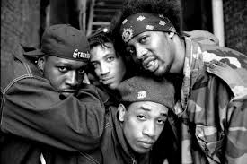
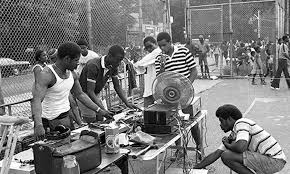

Hip Hop é uma cultura popular que surgiu entre as comunidades afro-americanas do subúrbio de Nova York na década de 1970. A música é a principal manifestação artística do hip hop, que também tem na dança e no grafite forte representação. Dos Estados Unidos, a cultura hip hop se espalhou pelo mundo. No Brasil, a cidade de São Paulo é aquela com maior número de adeptos e com uma relevante produção artística. Embora existam algumas traduções da expressão hip hop como balançar dos quadris, neste caso o vocábulo hip em inglês tem a conotação de "o que está na moda, acontecendo neste momento", e hop seria um movimento de dança. E ainda de acordo com registros norte-americanos, o termo hip hop é na verdade o som da cadência da marcha dos soldados, que foi comparado ao ritmo dos MCs no palco, ao lado dos DJS, ao proferir o rap. O hip hop teria sido registrado pela primeira vez em 1979, na gravação da música "Rapper’s Delight", do grupo Sugarhill Gang. Mas a expressão hip hop não tem uma única fonte e diversas figuras tenham alegado a sua criação, como o DJ Lovebug Starski, Afrika Bambaataa, Keith ‘Cowboy’ Wiggins e Grandmaster Flash. Com a sua origem nas periferias de Nova York, o hip hop americano acabou se tornando a expressão mais famosa em termos musicais. O hip hop gospel é um dos estilos provenientes desta cultura de rua, com forte perpetuação entre os jovens evangélicos de periferia. As letras das músicas do hip hop gospel discutem a realidade social, mas sempre com uma lição e mensagem de fé.
O Hip Hop enquanto cultura urbana surgiu na periferia de Nova York, entre as comunidades caribenhas, afro-americanas e latino-americanas na década de 1970. O contexto social era de violência e criminalidade nesses bairros, e a única forma de lazer possível para os jovens era nas ruas. Eles encontraram na música, poesia, dança e na pintura uma forma de manifestação de sua realidade e contestação. O fundador do hip hop teria sido Clive Campbell, ou DJ Kool Herc. O primeiro evento da história do hip hop ocorreu no dia 11 de Agosto de 1973, na festa de aniversário da irmã do Dj, Cindy Campbell, no número 1520 da Sedgwick Avenue, no Bronx em Nova York. Outra data que é marco na história do hip hop é o dia 12 de novembro de 1973, dia da fundação da ONG Zulu Nation que promovia a cultura hip hop como forma de manter os jovens longe do crime e da violência. Aos poucos a poesia na música, representada pelo rap, ganhou o espaço nas discotecas, que até então não cansavam de tocar os hits da era disco. As duplas de DJs e MCs ganhavam destaque e travavam competições entre si, as batalhas de rap, feitas só pela manifestação cultural e sem conotação de violência. O grafite nos muros era a expressão da pintura na cultura hip hop, e o break era a dança que saía das ruas para as festas em toda a cidade.
O disco Hip-Hop Cultura de Rua é o que marca a chegada do movimento no Brasil. São vários os rappers que participam do álbum, entre eles Thaíde e Dj Hum, até hoje dos principais nomes do hip hop nacional. Mas a cultura hip hop chegou primeiro ao Brasil através do break dance. Antes do álbum, o hip hop brasileiro tinha seu espaço nas ruas de São Paulo, mais precisamente no metrô São Bento, em que os artistas faziam sua performance para quem passasse pela rua e estivesse disposto a contribuir.
O hip hop tem quatro elementos principais: o rap, o DJing, o breaking (praticado pelos b-boys e b-girls) e a arte do grafite. Quando o hip hop surgiu, concentrava-se nos disc jockeys que criavam batidas rítmicas, eram pequenos trechos de música com ênfase em repetições, posteriormente, foi acompanhada pelo rap, identificado como um estilo musical de ritmo …mg src="hip 500.jpg" alt="descrição da imagem" width="390" height="200">